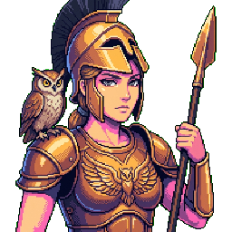
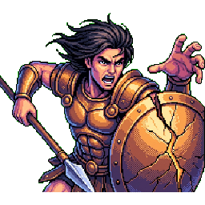
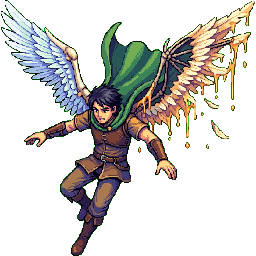
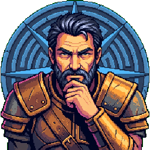
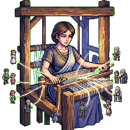

The Labors of Arête
You've been summoned to Mount Olympus — not to fight, but to learn something harder. Athena, goddess of wisdom, is tired of watching mortals bungle the basics.
Use → (or Next) to advance and to reveal points one at a time. F = fullscreen.
"Forget the Monsters"
"Today's labor is harder than slaying any beast," Athena says, grey eyes cool. "Today you learn to live well."
- She'll use the heroes you know — but not the way you expect.
- No swords. No quests. Just one question: what kind of person should you be?
- The philosopher behind it all? A man named Aristotle — and she has opinions about him.
Before Training Begins
Five gut-checks — no right answers. Just say where you stand; we'll revisit them when training ends.
Being a good person is more about who you are than what you do.
You can learn to be virtuous the same way you learn a skill — by practice.
A truly good life requires good friends, not just good choices.
There's a "right amount" of every emotion — even anger can be a virtue if felt at the right time and in the right way.
A society's laws and institutions are partly responsible for whether its citizens are virtuous.
The Philosopher
"He was my father's student," Athena says. "Well — my father's student's student. Plato taught him. But he thought Plato was too abstract."
- Aristotle (384–322 BCE) studied at Plato's Academy for twenty years, then broke away.
- He tutored Alexander the Great, founded his own school (the Lyceum), and studied everything — biology, politics, logic, constitutions, poetry.
- Where Plato looked up to ideal Forms, Aristotle looked around: at how people actually live, thrive, and fail.
- His ethics starts from a simple question: "What does a flourishing human life actually look like?"
Two Ways to Find the Good
"He was brilliant," Athena concedes. "But he thought my father was too stuck in the sky."
The Good is a transcendent Form — eternal, perfect, known through reason alone.
Know the Form of the Good, and right action follows. Philosophy is the path.
The good is how you actually live — a practical matter of habit, character, and community.
The goal isn't to know the good but to become good (NE II.2). Practice is the path.
Spot the Difference
He grounds ethics in how people actually live.
He rejects all talk of virtue and focuses on rules.
He argues that morality is simply a matter of opinion.
He says knowledge alone is enough to make you virtuous.
Eudaimonia
"Every mortal wants to be happy," Athena says. "But most of you have no idea what that actually means."
- Everything we do aims at some good. But what's the final good — the one we want for its own sake?
- Aristotle calls it eudaimonia (εὐδαιμονία): not "happiness" in the smiley-face sense, but flourishing — living well and doing well across a whole life.
- It's an activity of the soul in accordance with virtue (NE I.7). Not a feeling. A way of living.
- Not pleasure alone (Achilles feasting after battle). Not wealth (ask Midas). Not fame (heroes chasing kleos still die badly). Those can be parts of a good life — none is the whole.
Flourishing ≠ Pleasure
Athena glances toward the utilitarianism wing of the training camp. "Some people tried to reduce it all to pleasure. They were wrong."
Flourishing across a whole life: virtuous activity, good relationships, meaningful work.
A hard life lived with courage, wisdom, and friends can still be a good life.
Pleasure is the only intrinsic good; pain the only intrinsic evil.
A pleasant life — however shallow — counts as good by definition.
What Is Eudaimonia?
Feeling happy and content right now.
A life of virtuous activity and flourishing.
Having lots of money and security.
Being famous for heroic deeds.
In Aristotle's Words
Eudaimonia is "activity of the soul in accordance with
virtue" (NE I.7).
It is not just a feeling but a way of
living.

The Golden Mean
"Now pay attention," Athena says. "This is where most of you go wrong."
- A virtue is a stable disposition (hexis), not a one-off act. The brave person doesn't just act bravely once; they are brave, reliably.
- Each virtue sits between two vices: excess and deficiency. Courage lies between rashness and cowardice; generosity between prodigality and stinginess.
- The mean is not an arithmetic midpoint — it's relative to the person and situation.
- What counts as courage for a trained warrior differs from what counts for a civilian. The one who perceives the right response? That takes phronesis — practical wisdom.
The Rage of Achilles
"Let's look at Achilles," Athena says, conjuring an image of the great warrior. "A hero of unmatched physical courage, yes — but a total disaster of a human."
- In the Trojan War, Achilles was the Greeks' ultimate weapon. But when King Agamemnon insulted his honor, Achilles pouted in his tent and refused to fight, letting his allies die.
- Only when his dearest friend, Patroclus, was killed did he return to battle. Consumed by rage, he slaughtered Hector, desecrated the body, and dragged it behind his chariot for days.
- "My father's poets called it 'heroic,'" Athena snorts. "Aristotle called it a lack of self-government."
Courage: Finding the Mean
Aristotle uses courage as the classic virtue. But it's not just "not being afraid."
- Deficiency (Cowardice): Fleeing in fear, prioritizing safety over honor.
- Excess (Rashness/Wrath): Blind rage, rushing headlong into danger without reason, or desecrating a fallen foe. This is Achilles.
- The Mean (Courage): Facing the right things, for the right reason, in the right way, at the right time.
- Achilles had spirit, but because he couldn't moderate it, his courage curdled into the vice of wrath.

The Flight of Icarus
Athena sweeps her hand, and the scene changes to a boy soaring over the Aegean. "Next, a boy who thought he was a bird."
- Trapped in the Labyrinth, the master inventor Daedalus built two sets of wings made of feathers and wax for himself and his son, Icarus.
- Before they flew, Daedalus gave a strict warning: Do not fly too high, or the sun will melt the wax. Do not fly too low, or the damp sea will weigh down the feathers.
- But once in the air, the thrill of flight overcame Icarus. He flew higher and higher, the wax melted, and he plunged into the sea.
The Literal Middle Path
"Daedalus wasn't just giving flight instructions," Athena notes. "He was explaining the Mean."
- Icarus's tragedy is the Doctrine of the Mean made literal.
- The Deficiency (Damp Sea/Timidity): Flying too low, being too fearful to rise and escape.
- The Excess (Blazing Sun/Rashness): Flying too high, intoxicated by pride and thrill.
- The Mean (The Middle Way): Temperance and moderation — navigating escape safely by recognizing your limits.
Explore the Mean
Pick a character and a virtue domain — the marker shows where their myth places them on the spectrum. Green = near the mean; amber or magenta = trouble.
Test the Doctrine
A virtue is a stable disposition, not just a single good act.
The mean is relative to the person and the situation.
Each virtue lies between an excess and a deficiency.
The mean always means choosing the exact mathematical average.
Virtue is innate — you either have it or you don't.
The mean is exactly the same for everyone in every situation.
Practice Makes Virtuous
"How do you think my heroes got good at fighting?" Athena asks. "Practice. Ethics is no different."
- Aristotle calls this habituation (ethismos): "We become just by doing just acts, temperate by doing temperate acts" (NE II.1).
- Virtue is not a set of rules you memorize. It's a stable disposition (hexis) built over time.
- Just as you learn to play the lyre by playing the lyre, you learn to be patient by practicing patience.
- But practice alone isn't enough. You need to know *what* to do in each unique situation.

The Cunning of Odysseus
Athena points to her favorite mortal. "Look at Odysseus. He isn't the strongest, but he's the one who gets home."
- Trapped in the cave of the Cyclops Polyphemus, Odysseus didn't charge in blind fury (which would have meant death). Instead, he got the giant drunk, told him his name was "Nobody," and blinded him.
- To hear the irresistible song of the Sirens without shipwrecking, he had his men plug their ears with wax and tie him securely to the mast.
- Back in Ithaca, he spent days disguised as a beggar, patiently enduring insults from suitors to survey his household before striking.
Phronesis: Wisdom in Action
Odysseus demonstrates phronesis (practical wisdom) — the master virtue that coordinates all others.
- Phronesis is the ability to perceive what a situation requires and find the right mean.
- In the cave, raw courage without phronesis would have been suicide (rashness). Odysseus's restraint was the true mean.
- "Phronesis is situational intelligence," Athena explains. "It connects intellectual smarts with a good character. Without it, cleverness is just a weapon."
Wisdom ≠ Cleverness
"Don't confuse wisdom with being clever," Athena warns. "I've seen very clever people do terrible things."
Aims at the genuinely good; requires good character.
Odysseus navigating everyone safely home — reading each situation and choosing well.
Can serve any end, including wicked ones.
A con artist reads people brilliantly — but toward selfish ends. Cleverness without character.
The Tragedy of Medea
Athena's voice drops. "And then we have Medea. Brilliant, powerful, and utterly consumed."
- Medea used her magic to help Jason steal the Golden Fleece, betraying her own family for him. But years later, Jason abandoned her to marry the princess of Corinth.
- Blinded by jealousy and betrayal, Medea plotted a horrific revenge. She sent a poisoned robe to Jason's new bride, who died in agony.
- To inflict the maximum possible pain on Jason, she chose to murder their own children, escaping in a chariot sent by the sun god Helios as Jason wept.
The Nightmare of Akrasia
"She wasn't stupid," Athena says. "She knew exactly what she was doing. That's what makes it terrifying."
- Euripides gives Medea a famous line: "I know what evil I am about to do, but my passion is stronger than my reason."
- This is Aristotle's primary example of akrasia (incontinence or weakness of will).
- Unlike a truly vicious person who thinks doing bad is good, the akratic person *knows* what is right but is overcome by desire or anger.
- Without self-mastery and phronesis, Medea's brilliant cleverness became a tool of pure destruction.
Why Practice?
He didn't believe in formal education at all.
Knowledge of the good automatically makes you virtuous.
Virtues are genetic traits — you're born with them or not.
Virtues are dispositions formed by habit, like craft skills.
The Theft of Fire
"You can't flourish alone," Athena says. "Even the Titan who made you learned that the hard way."
- Prometheus pitied humanity, who lived cold and helpless in the dark. Defying Zeus, he stole fire from Mount Olympus, hiding it in a hollow fennel stalk, and gave it to mortals.
- With fire came civilization, science, and the arts. But Zeus's punishment was brutal: Prometheus was chained to a rock in the Caucasus, where an eagle ate his liver daily.
- "A noble act," Athena muses. "But a life of eternal torture on a rock is not what we call a happy ending."
The Political Animal
Aristotle famously wrote: "Man is by nature a political animal" (Politics I.2).
- For Aristotle, humans cannot fully flourish in isolation. We need a polis (community/city-state) to practice virtue and live well.
- Prometheus gave humanity the tools to build a community, but he was cast out of it. An individual on a rock, even a noble one, cannot achieve eudaimonia.
- Flourishing requires shared laws, education, and social institutions. Virtue is co-authored with the community you inhabit.

The Loom of Penelope
"If you want to see virtue that sustains an entire kingdom," Athena says, "look at Penelope."
- With Odysseus missing for twenty years, Ithaca was overrun by 108 greedy suitors demanding Penelope's hand and eating the palace out of house and home.
- To hold them off, she devised a trick: she would marry only after finishing a burial shroud for Odysseus's father. She wove it by day, but secretly unraveled it by torchlight at night.
- For three years she maintained this web of resistance, protecting her son, her household, and the throne through patient intelligence and temperance.
Philia: Virtue in Community
Penelope's story shows that virtue is relational. It requires philia (friendship/broad social loyalty).
- Aristotle claims friendship is one of the greatest external goods for eudaimonia (NE VIII).
- The highest form is virtue-friendship, where friends love each other for their character, helping each other grow.
- Penelope's virtue wasn't a solo act of heroic pride like Achilles's; it was a communal anchor that kept the social fabric of Ithaca from tearing apart.
Me vs We
Modern ethics often asks "what should I do?" Aristotle asks something bigger.
What should I do in this situation? Ethics as personal decision-making.
A lonely hero choosing right — admirable, but Aristotle would say incomplete.
What kind of polis produces virtuous people? Character and community are inseparable.
Penelope's virtue is woven into Ithaca itself — it needs good laws, good neighbors, good friends.
Would Aristotle Agree?
Humans flourish in community, not in isolation.
Laws and institutions shape moral character.
Virtue-friendship — loving someone for their character — is the highest kind.
A hermit can be fully virtuous without any community at all.
The state should stay out of ethics entirely.
Justice is irrelevant to an individual's personal virtue.
The Tradition Lives
"Mortals spent centuries arguing about rules and calculations," Athena says. "Then some of them remembered to ask the question that matters."
- After centuries dominated by utilitarianism ("maximize happiness") and deontology ("follow the rules"), virtue ethics came roaring back in the 20th century.
- Why? Because rules and calculations feel incomplete without asking: what kind of person should I be?
- Three modern philosophers picked up Aristotle's project and ran with it — each in a different direction.
Three Modern Paths
Each updates Aristotle for the modern world — same root, different branches.
- Alasdair MacIntyre (After Virtue, 1981): virtues only make sense within practices (shared activities with internal goods) and traditions (ongoing communal narratives). Modern individualism has fragmented our moral vocabulary — we need to recover it.
- Philippa Foot (Natural Goodness, 2001): neo-naturalism — virtues are natural excellences of the human species, just as deep roots are natural excellences of an oak. A human who lacks justice is defective as a human.
- Rosalind Hursthouse (On Virtue Ethics, 1999): practical action guidance — "an action is right iff it is what a virtuous agent would characteristically do in the circumstances." Virtue ethics can tell you what to do, not just what to be.
Same Root, Three Branches
Virtues make sense within shared practices and living traditions.
A chess player's honesty; a community's inherited sense of justice — virtues need a social home.
Virtues are natural human excellences — evaluable the way we evaluate any living thing.
A human without justice is defective as a human, like a lioness who won't nurse her cubs.
An action is right if it's what a virtuous person would characteristically do.
"What would a courageous/generous/just person do here?" — virtue ethics as practical guide.
Match the Philosopher
Alasdair MacIntyre
Rosalind Hursthouse
Philippa Foot
Peter Singer
Complete the Map
MacIntyre argues virtues make sense within practices and
traditions.
Hursthouse says an action is right if it's what a virtuous agent would do.
Foot calls virtues natural excellences of the human species.
Revisit Your Instincts
Here's where you stood before training began. Re-rate each one — has Athena shifted anything? Staying put is fine; can you now say why?
Go Practice
"Knowing the mean isn't enough," Athena says, already turning away. "You have to live it."
- Eudaimonia — flourishing is the highest good: activity of the soul in accordance with virtue.
- The mean — virtue is a disposition between excess and deficiency, perceived by practical wisdom.
- Habituation & phronesis — virtue is practiced, not just taught; wisdom unifies it.
- The polis & friendship — you can't flourish alone; community and virtue-friendship are essential.
- The tradition continues — MacIntyre, Foot, and Hursthouse carry Aristotle's project forward.
Visit every slide, answer every question, and submit both belief probes to complete your training.